Talk instead of type.
Hold Right Option in any app, say it, and let go. Your words are typed for you.
Everything runs on this computer. Nothing you say leaves it.
Use your API key
The fastest and most accurate, for a few cents a day. You can change this anytime in Settings → AI Models.
Let Splashdown hear you
It listens only while you hold Right Option.
✓ Allowed
Let Splashdown type for you
Switch on Splashdown in System Settings, so it can notice when you hold Right Option and type your words where you are.

Waiting for the switch. This page moves on by itself.
✓ Allowed
Still waiting?
- Find Splashdown in the list and click the switch beside it, so it turns blue.
- Your Mac may ask for your password or Touch ID. That's normal.
- Not in the list? Click + under the list, choose Splashdown in Applications, then switch it on.
- Already on? Switch it off and on again.
Getting ready
Downloading what Splashdown needs to understand you. This page moves on by itself.
Say hello
Splashdown lives in the menu bar
Look for the blue arrow at the top of your screen.
What else it can do
Want Splashdown to do things for you, not just type?
Say “open Spotify”, “remind me at 5 to stretch”, “add dentist to my calendar on Thursday at 4” or “pause the music”, and it's done.